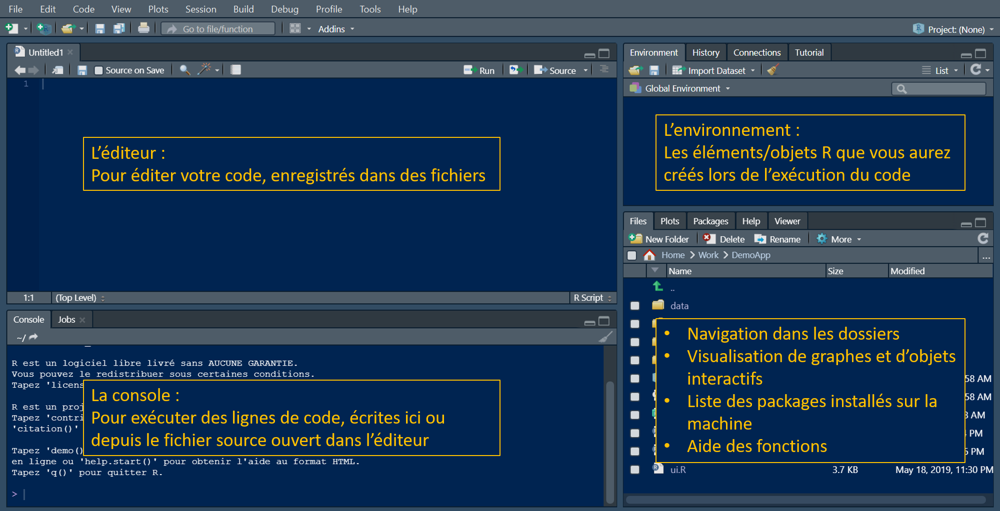
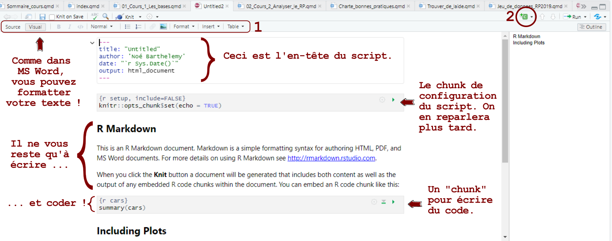

1+2[1] 3Noé Barthelemy
Bienvenue dans le Module 1 de notre formation R, dédié aux fondamentaux de ce langage de programmation puissant dédié à l’analyse statistique et à la manipulation de données. En tant que statisticien au sein de l’Institut des Statistiques et des Études Économiques (ISEE), vous êtes sur le point d’acquérir des compétences essentielles qui vous permettront de maîtriser R et d’exploiter son potentiel exceptionnel.
Dans ce module, nous allons découvrir LES BASES de R et Rstudio. Il est donc destiné aux débutants !
Prenez le temps d’explorer, posez des questions (sur la Communauté apprenante ou directement à votre référent R !) et surtout, pratiquez autant que possible.
Imaginez R comme une boîte à outils spéciale conçue pour travailler avec des données et effectuer des analyses statistiques. C’est un langage de programmation que vous pouvez utiliser pour dire à votre ordinateur quoi faire avec vos informations. Tout simplement.
Si vous avez une grande quantité de données à trier, analyser ou visualiser, R sera votre meilleur ami !
Pensez à R Studio comme à un bureau bien organisé où vous pouvez utiliser R de manière plus conviviale. Il offre une interface utilisateur qui facilite l’écriture de vos instructions et la visualisation des résultats.
R est gratuit et open source ! Vous pourrez donc l’utiliser partout, et il est personnalisable.
La communauté de R est GIGANTESQUE et experte. Donc, dès que vous avez un problème, vous trouverez une réponse sur internet.
Les packages : Grâce à sa communauté, R bénéficie des milliers de packages, qui ajoutent des fonctionnalités spécifiques. On peut (presque) TOUT faire avec R.
La reproductibilité : Une analyse rigoureuse, c’est celle qu’on peut reproduire à l’identique, et modifier à l’envie. Grâce aux scripts, R permet cela.
La puissance : R est extrêmement puissant pour les calculs statistiques.
Visualisation de Données : R excelle dans la création de graphiques et de visualisations de données de qualité professionnelle. Vous pouvez créer une grande variété de graphiques pour explorer et présenter vos résultats.
Courbe d’apprentissage : Pour les débutants, R peut avoir une courbe d’apprentissage abrupte, en particulier si vous n’avez pas d’expérience en programmation. Cependant, cela peut être surmonté avec la pratique et l’utilisation régulière (et en allant au bout de ce tutoriel !).
Interface Utilisateur : Bien que R Studio facilite l’utilisation de R, certains débutants peuvent trouver l’interface un peu intimidante au début, surtout s’ils ne sont pas habitués à la programmation. Vous verrez qu’elle est finalement assez simple.
Documentation dispersée : La documentation de R est souvent disséminée à travers diverses sources en ligne, ce qui peut rendre la recherche d’informations spécifiques parfois un peu complexe. Mais au final, on s’en sors très bien, vous verrez !
C’est la remarque standard ! En effet, Excel est un bel outil, puissant également, et abordable dans ses fonctions de base. Si vous n’utilisez Excel que pour copier coller quelques données et faire un tableau à l’occasion, vous n’avez probablement pas besoin de R. De plus, ces outils sont complémentaires, on ne les utilisera pas pour faire les mêmes choses.
Cependant, après quelques efforts à l’apprentissage, R vous permettra de faire bien plus de choses que Excel, de manière plus intuitive. En pratiquant l’analyse de données, vous atteindrez très vite vos limites avec Excel (à moins d’y passer des nuits entières). En revanche, la plupart des utilisateurs de R n’atteindront jamais de leur vie les limites de l’outil en termes de puissances et de créativité.
Au final, vous ferez plus de choses, vous les ferez mieux, et plus rapidement.
Convaincus ?
Sur Rstudio, on fonctionne avec des projets. Pourquoi ?
Organisation : Les projets permettent d’organiser vos fichiers, données et scripts au sein d’une structure cohérente, facilitant la gestion et la collaboration.
Isolation : Chaque projet a son propre environnement, isolant les dépendances spécifiques du projet et évitant les conflits entre différents projets.
Gestion des fichiers : Les projets facilitent la gestion des fichiers en fournissant une vue globale du projet, permettant une navigation et une recherche plus aisées.
Reproductibilité : En utilisant des projets, vous assurez une reproductibilité plus facile en encapsulant tous les éléments nécessaires à votre analyse au sein d’un seul environnement.
Collaboration : Les projets simplifient la collaboration en regroupant tous les éléments nécessaires et en facilitant le partage avec d’autres utilisateurs.
Pour en créer un, rien de plus facile :
Allez dans Fichiers –> Nouveau projet.
Choisissez New directory (Nouveau dossier).
Choisissez New project (Nouveau projet).
Donnez lui un nom et choisissez où il sera stocké.
Maintenant, il va falloir organiser vos fichiers correctement.
A l’ISEE, nous avons une norme que vous devez respecter, et vous la trouverez dans cette fiche des bonnes pratiques avec R et R studio : Fiche des bonnes pratiques avec R et Rstudio – Pensez à la relire de temps en temps !
En résumé, le projet doit comporter 4 dossiers :
01_code : Contient les scripts et autres fichiers directement liés au code.
02_donnees : Contient les données, la bibliographie, les dictionnaires de variables, etc.
03_exports : Tout ce qui est exporté du projet (Tableaux, figures, etc).
04_rapports : Contient les rapports d’analyse du projet et les fichiers associés.
Autre astuce : N’hésitez pas à fouiller dans les menus, notamment dans “Outils –> Options de projet”.
Vous y trouverez plein de moyens de configurer votre projet à votre convenance.
Votre projet est prêt ! Allons coder !

L’Éditeur pour éditer votre code, enregistré dans des fichiers
La Console pour exécuter des lignes de code, écrites ici ou depuis le fichier source ouvert dans l’éditeur
L’Environnement : Les éléments/objets R que vous aurez créés lors de l’exécution du code. Et d’autres onglets dont la connexion à vos bases de données notamment.
L’onglet Files (ou Fichiers) pour la navigation dans les dossiers, notamment celui de votre projet. Plots pour l’affichage de graphique selon votre utilisation de vos scripts. Packages (ou Paquets) pour la liste des packages déjà installés sur la machine. Help pour l’aide des fonctions. Viewer pour afficher le contenu de pages HTML créées dans vos scripts.
Il est temps de créer un script.
En fait, tout code peut être tapé dans la console directement, comme lorsqu’on utilise une calculatrice. Le script permet de conserver toutes nos actions (calculs, imports de données, commentaires, etc), et de les ré-exécuter à l’envie !
En dessous de “fichier”, en haut a gauche de l’interface de Rstudio, il y a un bouton qui symbolise une feuille blanche avec un + vert. Appuyez sur la petite flèche noire qui se trouve juste à sa droite : Vous voyez tous les types de créations que vous pouvez faire sur R !
Commençons par un script de type Rmarkdown.
Ajoutez un titre et votre nom en tant qu’auteur.ice.
Cliquez sur “OK” !
Le résultat devrait correspondre à ceci :

Ecrire un script Rmarkdown, c’est très simple : C’est du texte, et du code.
On écris le texte directement sur le script (on peut mettre des titres, des listes, etc., voir encadré 1 dans l’image ci-dessus).
Quand on veut mettre du code, on appuie sur le bouton encerclé en rouge (2) et on choisis le langage souhaité.
Ici, on choisis R, mais notez la diversité de langages qui peuvent cohabiter au sein d’un même script.
C’est fait ?
Voila, vous avez créé un chunk.
C’est dans ces encadrés que vous écrirez votre code. Vous pouvez lancer le code en appuyant sur la flèche verte en haut à droite du chunk.
Maintenant, pensez à sauvegarder votre script (ctrl + s), et placez le dans votre dossier “01_code”.
Gérer ses scripts sur Rmarkdown permet de faire énormément de choses comme exporter vos scripts en PDF ou Word (avec les figures, les commentaires et le code !), et bien d’autres choses.
Suivez le cours N°3 pour en savoir plus : Cours N°3 : Rmarkdown
Les opérateurs de R ressemblent à ceux d’autres langages de programmation. Certains opérateurs arithmétiques comprennent :
+ addition
- soustraction
* multiplication
/ division
^ exponentiation
Les opérateurs logiques comprennent :
> supérieur à
>= supérieur ou égal à
== strictement égal à
!= non égal à
Essayons ! Créez un chunk avec le bouton, ou en entrant le raccourci “ctrl + alt + i”.
Dans ce chunk, écrivez “1+2” et appuyez sur la flèche verte.
Voila ! Le résultat s’affiche sous le chunk.
Si on écris “1 == 2” on obtient “FALSE”. Ben oui, 1 n’est pas égal à 2.
[1] FALSELes variables sont utilisées pour stocker des données. Leur valeur peut être modifiée, utilisée et manipulée selon les besoins.
Un nom unique attribué à une variable (fonction ou objet également) est appelé identifiant.
Pour déclarer une variable, nous devons lui assigner un nom.
Pour ça on utilise l’opérateur <- .
Essayons !
Comment nommer les variables dans R ?
Conventions de nommage :
Utilisez des noms descriptifs qui reflètent la nature de la variable.
Évitez d’utiliser des noms trop courts ou trop longs. Optez pour une longueur de nom qui offre une clarté suffisante sans être excessive.
Utilisation de lettres minuscules :
- Préférez les lettres minuscules pour les noms de variables. Par exemple, utilisez
my_variableplutôt queMy_Variable.Utilisation de traits de soulignement :
- Utilisez des traits de soulignement (
_) pour séparer les mots dans un nom de variable. Par exemple,my_variable.Éviter les noms réservés :
- Évitez d’utiliser des noms qui sont déjà réservés pour des fonctions ou des objets en R.
Par exemple, ne nommez pas une variableifoumean, car ce sont des noms de fonctions intégrées.Éviter les caractères spéciaux :
- Évitez d’utiliser des caractères spéciaux tels que
$,%, ou&dans les noms de variable.
Cela peut causer des problèmes de lecture et d’interprétation.Utilisation de noms significatifs :
- Choisissez des noms qui ont un sens dans le contexte de votre programme.
Évitez les noms génériques commetempouxsauf s’ils sont appropriés pour une utilisation temporaire.
Maintenant, créons une deuxième variable et additionnons la à la première.
On peut stocker le résultat dans une nouvelle variable :
# Pour voir le contenu d’une variable, écrivez simplement son nom !
Les types de variables et d’objets sur R, c’est super important. En les connaissant, vous comprendrez mieux vos données et ce que vous pouvez faire avec.
Pour connaitre le type d’une variable, tapez :
Essayons d’autres formats de variables :
[1] "character"R propose plusieurs types de variables, chacun ayant ses spécificités.
Voici quelques-uns des types de variables couramment utilisés dans R :
Représente les nombres réels.
Exemple : `x <- 42.5`.
Représente les nombres entiers.
Exemple : `y <- 42L` (la lettre “L” indique que c’est un entier).
Représente des chaînes de caractères.
Exemple : `z <- “Bonjour”`.
Représente des valeurs logiques (Vrai/Faux).
Exemple : `flag <- TRUE`.
Utilisé pour représenter des variables catégorielles.
Exemple : `gender <- factor(c(“Homme”, “Femme”, “Homme”))`.
Représente des dates.
Exemple : `dob <- as.Date(“1990-01-01”)`.
Représente des heures.
Exemple : `timestamp <- as.POSIXct(“2023-01-01 12:30:00”)`.
Chaque type de variable a ses propres opérations et méthodes spécifiques. Par exemple, les opérations arithmétiques sont généralement utilisées avec des variables numériques, tandis que les opérations logiques sont utilisées avec des variables logiques.
Il est important de comprendre les types de variables car cela affecte la manière dont les données sont stockées en mémoire et la manière dont les opérations sont effectuées.
Par exemple, tapez “my_variable + variable_texte” dans un chunk et exécutez-le.
Hé oui, on ne peut pas additionner une variable numérique avec une variable non numérique !
Aaaah … les vecteurs. Il peut être compliqué de comprendre leur intérêt et leur nature, alors allons y pas à pas :
Imaginez que vous ayez une boîte dans laquelle vous voulez stocker plusieurs valeurs, comme des nombres. Cette boîte est votre vecteur.
Stockage ordonné : Un vecteur vous permet de stocker plusieurs valeurs de manière ordonnée. Par exemple, vous pouvez avoir un vecteur de notes pour chaque élève dans une classe.
Accès facile aux éléments : Comme les éléments sont stockés de manière ordonnée, vous pouvez facilement accéder à chaque note en utilisant sa position dans le vecteur. Par exemple, la première note est à la position 1, la deuxième à la position 2, et ainsi de suite.
Opérations sur l’ensemble : Vous pouvez effectuer des opérations sur l’ensemble des notes en une seule fois. Par exemple, vous pourriez vouloir calculer la moyenne de toutes les notes. Avec un vecteur, cela se fait facilement.
# Crééons un autre vecteur de notes. La distribution de ces notes sera "normale" (au sens statistique), grâce à la fonction runif() et la définition de quelques paramètres.
# Prenons 150 notes
# Définir les paramètres
n <- 150 # Nombre d'observations
borne_inf <- 0 # La note minimale c'est 0
borne_sup <- 20 # La note maximale c'est 20
moyenne_val <- 12.5 # Moyenne des notes
ecart_type_val <- 9 # Écart type
# Générer un échantillon aléatoire
uniforme_aleatoire <- runif(n)
echantillon_aleatoire <- moyenne_val + ecart_type_val * qnorm(uniforme_aleatoire)
# Tronquer les valeurs pour qu'elles soient dans la plage spécifiée
echantillon_aleatoire <- pmax(pmin(echantillon_aleatoire, borne_sup), borne_inf)
# Calcul de la moyenne des notes
moyenne_echantillon <- mean(echantillon_aleatoire)
moyenne_echantillon[1] 12.47393Le vecteur permet de traiter l’ensemble des données d’un coup, ce qui simplifie les calculs.
Facilité de manipulation : Vous pouvez ajouter, supprimer ou modifier des notes dans votre vecteur en fonction de l’évolution des données.
Le vecteur offre une flexibilité pour gérer dynamiquement les données.
En résumé, un vecteur en R est comme une boîte qui vous permet de stocker et d’organiser des données de manière ordonnée, avec la possibilité d’accéder facilement à chaque élément, de réaliser des opérations sur l’ensemble et de manipuler les données de manière souple. C’est un outil puissant pour travailler avec des ensembles de données dans R.
Les packages R sont des modules complémentaires qui ajoutent des fonctionnalités à R. Ces package sont crées par la communauté de R, qui les partage alors gratuitement. Souvent, un package répond aux besoins d’un domaine précis. Par exemple :
dplyr : Manipulation de données. Offre des fonctions simples et cohérentes pour filtrer, trier et agréger des données.
ggplot2 : Visualisation de données. Permet de créer des graphiques élégants et hautement personnalisables.
tidyr : Facilite la manipulation et la transformation de données en suivant les principes de la “tidy data”.
caret : Facilite l’entraînement de modèles prédictifs en fournissant une interface unifiée pour différents algorithmes.
randomForest : Machine Learning. Implémente l’algorithme Random Forest pour la classification et la régression.
shiny : Permet de créer des applications web interactives directement à partir de R.
lubridate : Manipulation de dates. Simplifie la manipulation et le traitement des objets de date et d’heure.
magrittr : Opérateurs pipe (%>%). Facilite la composition de fonctions en utilisant des opérateurs pipe pour améliorer la lisibilité du code.
stringr : Manipulation de chaînes de caractères. Fournit des fonctions pour travailler efficacement avec des chaînes de caractères.
tidyverse : LE MEILLEUR PACKAGE. Regroupe plusieurs packages, dont dplyr, ggplot2, tidyr, etc., pour faciliter l’analyse de données en suivant les principes de “tidy data”. Ce package (merci Hadley Wickham) est incontournable et a rendu R bien plus facile à utiliser qu’auparavant.
Ce sont des exemples, parmi les 20 248 packages disponibles en 2023. Chaque package apporte son lot de fonctions. Ensemble, ils permettent à R d’effectuer quasiment tout type d’analyse, de la génétique des populations à la cartographie, en passant par la finance internationale.
Les trois plateformes pour trouver des packages sont :
Il est important de noter que les packages ne sont généralement pas indépendants et peuvent dépendre d’autres packages pour certaines fonctionnalités, créant ainsi un réseau de dépendances entre eux.
Un package s’installe très simplement :
On peut aussi les gérer par l’onglet “Packages” du panneau en bas à droite de Rstudio.
Gérer les packages, c’est parfois (souvent) des prises de tête, alors, à l’ISEE, on fait le travail pour vous ! De fait, vous ne pouvez pas installer vos propres packages, il faudra passer par votre référent R (moi en 2024).
Pour en savoir plus sur un package, obtenir la liste des fonctions, des exemples d’usage etc, il suffit de taper “?nomdupackage” dans la console.
Ou alors, on peut taper son nom dans la barre de recherche de l’onglet packages.
Par exemple :
Aucune documentation pour 'DBI' n'a été trouvée dans les packages et les bibliothèques :
vous pourriez essayer '??DBI'Pour une fonction, c’est la même chose !
Quand on écrit son script, on commence toujours par un chunk de chargement des packages. Comme on fait son sac pour aller au travail, on sélectionne ici tous les bons outils avant de démarrer. Si on doit en rajouter un plus tard, on le fera.
On charge toujours les packages avec la fonction library.
Par exemple :
── Attaching core tidyverse packages ──────────────────────── tidyverse 2.0.0 ──
✔ dplyr 1.1.2 ✔ readr 2.1.4
✔ forcats 1.0.0 ✔ stringr 1.5.0
✔ ggplot2 3.4.3 ✔ tibble 3.2.1
✔ lubridate 1.9.2 ✔ tidyr 1.3.0
✔ purrr 1.0.2
── Conflicts ────────────────────────────────────────── tidyverse_conflicts() ──
✖ dplyr::filter() masks stats::filter()
✖ dplyr::lag() masks stats::lag()
ℹ Use the conflicted package (<http://conflicted.r-lib.org/>) to force all conflicts to become errorsLe chargement a nécessité le package : sp
The legacy packages maptools, rgdal, and rgeos, underpinning the sp package,
which was just loaded, will retire in October 2023.
Please refer to R-spatial evolution reports for details, especially
https://r-spatial.org/r/2023/05/15/evolution4.html.
It may be desirable to make the sf package available;
package maintainers should consider adding sf to Suggests:.
The sp package is now running under evolution status 2
(status 2 uses the sf package in place of rgdal)
Attachement du package : 'raster'
L'objet suivant est masqué depuis 'package:dplyr':
selectSi vous oubliez de le faire, vous n’aurez tout simplement pas accès aux fonctions du package !
Essentiellement, tout en R est réalisé à l’aide de fonctions. Une fonction est un bloc de code écrit pour une tâche spécifique ou une série de tâches. Elle peut accepter des paramètres et peut retourner une valeur si définie.
La structure d’une fonction est simple : Un nom, des arguments, et un corps.
Par exemple :
# Définition de la fonction d'addition : Elle additionne !
addition <- function(a, b) {
resultat <- a + b
return(resultat)
}
# Appel de la fonction avec des arguments
Addition1 <- addition(a = 3, b = 5)
# Affichage du résultat
print(Addition1)[1] 8Prenez le temps de regarder : la fonction s’appelle addition a deux arguments, a et b. Dans son corps, on code le calcul de a + b, et le fait de retourner (return) le résultat. Une fois la fonction fermée, on “l’appelle” par son nom, en donnant les deux arguments entre parenthèse : addition(a = 3, b = 5).